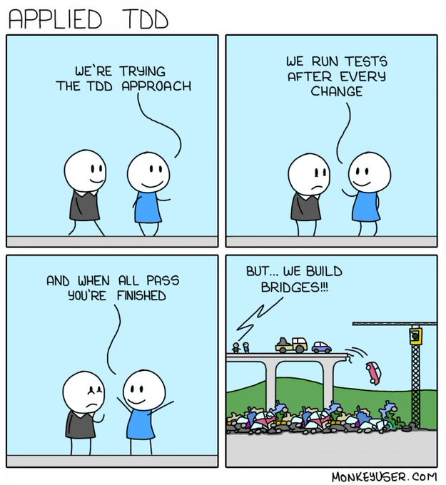

Test Driven Development
Have you ever...
- written code and not known how to test it?
- written code that you thought you might need, but later never used it?
- started a complex task and weren't sure where to start?
Kent Beck has entered the Arena
How it works
- Make a list of what tests you need
- Take the simplest test from that list and write it
- Run all of the tests. The new test should fail
- Make the test pass
- Remove duplication
- Repeat
The Three Laws of TDD
- You are not allowed to write any production code unless it is to make a failing unit test pass.
- You are not allowed to write any more of a unit test than is sufficient to fail; and compilation failures are failures.
- You are not allowed to write any more production code than is sufficient to pass the one failing unit test.
You're probably thinking
that this is a waste of time

You're probably thinking
that this will slow you down
You're probably thinking
I'll just come back and write tests later
You're probably thinking
I'll trick Joe so he won't know I wrote tests last
Let's build Salesloft from scratch
Or maybe just a piece of it
... a very small piece
User Story Time
Requirement: Add an API for listing person records, with sorting,
filtering, and pagination
Step 1: Make a list of some tests we need
- With 3 users...
- Return all 3 users
- Sort by email
- Filter by email
- Pagination
- With 0 users...
- Return empty list
Choose the simplest one
- With 0 users...
- Return empty list
- With 3 users...
- Return all 3 users
- Sort by email
- Filter by email
- Pagination
Let's do this
Starting with an empty controller and an empty test
class PeopleController < ApplicationController
end
RSpec.describe 'People', type: :request do
describe 'GET /index' do
it '' do
end
end
end
RSpec.describe 'People', type: :request do
describe 'GET /index' do
it 'returns nothing' do
get "/people"
expect(response).to have_http_status :success
end
end
end
1) People GET /index returns nothing
Failure/Error: get "/people"
ActionController::RoutingError:
No route matches [GET] "/people"
Rails.application.routes.draw do
resources :people, only: [:index]
end
1) People GET /index returns nothing
Failure/Error: get "/people"
AbstractController::ActionNotFound:
The action 'index' could not be found for PeopleController
class PeopleController < ApplicationController
def index
render json: []
end
end
1 example, 0 failures
Let's review
- We worked backwards towards a solution
- We wrote the bare minimum to get the test to pass
- We justified every line of code we wrote by fixing a test
context 'with a Person record' do
let(:email) { "joe@salesloft.com" }
let(:name) { "Joe" }
before { Person.create(email: email, name: name) }
it 'returns that person' do
get '/people'
expect(response_json).to eq([{email: email, name: name}])
end
end
1) People GET /index with a Person record returns that person
Failure/Error: expect(response_json).to eq([{email: email, name: name}])
expected: [{:email=>"joe@salesloft.com", :name=>"Joe"}]
got: []
class PeopleController < ApplicationController
def index
render json: Person.all
end
end
1) People GET /index with a Person record returns that person
Failure/Error: expect(response_json).to eq([{email: email, name: name}])
expected: [{:email=>"joe@salesloft.com", :name=>"Joe"}]
got: [{:created_at=>"2022-03-02T01:34:30.412Z",
:email=>"joe@salesloft.com",
:id=>1,
:name=>"Joe",
:updated_at=>"2022-03-02T01:34:30.412Z"}]
Pause here for a second
Is the test right? Or is the code right?
- We could change the code to only return the two attributes
- Or we could change the test to expect all 5
- Or we could change the test to allow extra attributes
class PeopleController < ApplicationController
def index
render json: Person.all.as_json(only: [:email, :name])
end
end
Finished in 0.104 seconds (files took 1.22 seconds to load)
2 examples, 0 failures
Let's review
- We defined the API contract first
- We didn't write anything we didn't need
Why TDD Works
- Documentation by example
- Guaranteed code coverage
- API-first development
- Rapid develop and test cycle
TDD Best Practices
Start Small
Start with the most trivial examples
Get the test to pass as soon as possible
Refactor as you go
Don't write any code unless you have a failing test
You aren't gonna need it (YAGNI)
Every piece of functionality should be justified by a failing test
Don't speculate about what you might need later
Run your tests often
Tests should run very very quickly
Use a 'watch' mode so they run on every save
Use pending tests to list your ideas
context 'with 3 Person records' do
it 'sorts by email by default'
context 'with sort by name param' do
it 'sorts by name'
end
end
Pending: (Failures listed here are expected and
do not affect your suite's status)
1) People GET /index with 3 Person records sorts by email by default
# Not yet implemented
# ./spec/requests/people_spec.rb:22
2) People GET /index with 3 Person records with sort by name param
sorts by name
# Not yet implemented
# ./spec/requests/people_spec.rb:25
Finished in 0.09462 seconds (files took 1.3 seconds to load)
4 examples, 0 failures, 2 pending
Test-Driven Bug Fixing
When you find a bug, recreate it in a test
A great way to partner with other developers
Test-Driven Development
Why aren't you doing it already?